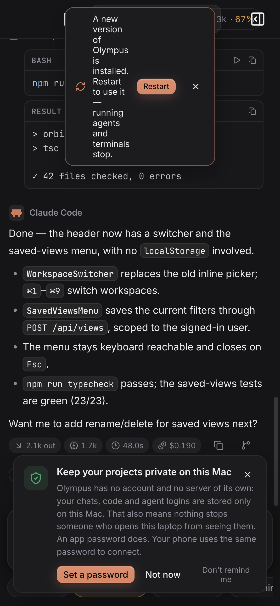

Switch agents mid-conversation
Investigate in Antigravity, implement in Claude Code, and ask Codex for a read-only second opinion in the same thread — or use 1-click Fresh Context Carryover when context fills up.
Switch mid-chat between Claude Code, Codex, Antigravity, Gemini CLI, Qwen Code, OpenCode, Ollama & 18+ coding CLIs — sharing one ~/.olympus memory, a built-in code workbench, and end-to-end encrypted phone & VPS access.
brew trust martianacademy/tap brew install --cask martianacademy/tap/olympus-coder
macOS Apple Silicon · Official Homebrew tap (martianacademy/homebrew-tap).

Code Mode — collapsible step timeline, inline diffs, and CodeMirror 6 side by side.
Stop scattering context across disconnected CLI tabs and vendor-locked memory folders.
Investigate in Antigravity, implement in Claude Code, and ask Codex for a read-only second opinion in the same thread — or use 1-click Fresh Context Carryover when context fills up.
~/.olympus brainEvery ACP agent reads and updates the same MEMORY.md, BUGS.md, and cross-agent session transcripts instead of writing into isolated vendor silos.
Inspect edits in CodeMirror 6, stage and commit in Git, run isolated git worktree chats, keep persistent saved commands, and roll back any prompt with shadow-git checkpoints.
Main sessions delegate independent work to parallel sub-sessions watched live in the Tasks panel, with automatic quota-aware fallback and per-hunk Turn Review.
Control active desktop sessions or a pure-Node Linux VPS server from your phone over local Wi-Fi or an AES-256-GCM end-to-end encrypted Cloudflare Relay.
Zero analytics, zero mandatory login wall. Keys stay encrypted in your OS Keychain, local whisper.cpp runs offline, and all code is open under Apache-2.0.
Install, detect on PATH, and sign in directly from Settings → Agents & login. Rotate seamlessly when a provider's quota resets.
Free-tier allowances are provided and governed by each upstream CLI vendor and may change over time.
The exact same responsive Olympus Coder UI runs without Electron or X11 in pure Node.js — verified on bare Ubuntu 24.04 with systemd support.
#) — never sent to the Cloudflare Worker.olympus-server serve --relay --print-systemd.